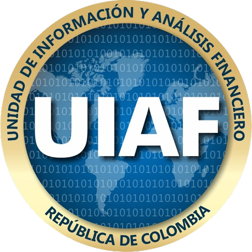

Normativa Legal de Soluciones Digitales

En la Organización SOLUCIONES DIGITALES S.A.S., estamos comprometidos con la puesta en marcha de acciones que permitan tener operaciones comerciales de venta, compra, intermediación y/o custodia de Servicios de Alta Tecnología, disminuyendo los riesgos frente al Lavado de Activos y/o Financiación del Terrorismo LA/FT.
Esta necesidad responde a que, en la actualidad, en nuestro país es necesario establecer algunos procedimientos, controles y reportes en las Personas naturales y/o Jurídicas que realicen actividades comerciales con Servicios de Alta Tecnología (SAT), para la prevención de actividades delictivas.
terrorismo, lavado de activos, corrupción administrativa, etc., que obliga a que cada vez más numerosos los entes obligados a adoptar medidas de prevención, detección y control del lavado de activos.
El uso de servicios de alta tecnología (SAT) en la economía representa un desafío para la prevención y el combate al lavado de activos (LA) y el financiamiento del terrorismo (FT). Colombia no cuenta con una legislación que regule explícitamente los SAT. Sin embargo, existen normas generales, como la Ley de Financiamiento (Ley 1943 de 2018), que otorgan beneficios fiscales a las empresas que participan en el desarrollo de valor agregado tecnológico.
Por su parte, la Unidad de Información y Análisis Financiero (UIAF) emitió la Resolución 314 de 2021, del 15 de diciembre de 2021. Con esta Resolución, la UIAF implementó la obligación de reporte a los proveedores de servicios de alta tecnología. La resolución 314 se aplica a las personas naturales o jurídicas que realicen por cuenta propia o por cuenta de otra persona natural o jurídica actividades u operaciones, cualquiera que sea su cuantía, relacionadas con:
a) Intercambio entre SAT y monedas fiduciarias e intercambio de monedas fiduciarias a servicios de alta tecnología;
b) Intercambio entre una o más formas de SAT;
c) Transferencias de SAT;
d) Custodia o administración de SAT o instrumentos que permitan el control de SAT;
e) Participación y provisión de servicios financieros relacionados con la oferta o venta de un SAT; por parte de un emisor;
f) En general, los servicios relacionados con SAT.
De este modo, La Organización SOLUCIONES DIGITALES S.A.S., establecido como PROVEEDOR DE SERVICIOS DE ALTA TECNOLOGÍA – PSAT ante la Unidad de Información y Análisis Financiero – UIAF e integrante de un sector de economía transaccional formal de nivel nacional e internacional, cuya misión es la de adherirse al compromiso de Colombia con el GAFILAT - Grupo de Acción Financiera de Latinoamérica, para mitigar los riesgos de LA/FT que se presentan en virtud de las operaciones con SAT y las actividades que realizamos los PSAT, destacando la importancia de contar con mecanismos de detección, seguimiento, monitoreo y control mediante la puesta en marcha de un SISTEMA DE AUTOCONTROL Y GESTIÓN DEL RIESGO INTEGRAL DE LAVADO DE ACTIVOS, FINANCIACIÓN DEL TERRORISMO Y FINANCIAMIENTO DE LA PROLIFERACIÓN DE ARMAS DE DESTRUCCIÓN MASIVA - SAGRILAFT LA/FT/FPADM.
Por lo anterior y con ocasión de su naturaleza (PSAT); La Organización SOLUCIONES DIGITALES S.A.S., aunque NO está obligada a la implementación de un SISTEMA DE AUTOCONTROL Y GESTIÓN DEL RIESGO INTEGRAL DE LAVADO DE ACTIVOS, FINANCIACIÓN DEL TERRORISMO Y FINANCIAMIENTO DE LA PROLIFERACIÓN DE ARMAS DE DESTRUCCIÓN MASIVA - SAGRILAFT LA/FT/FPADM., ha decidido de manera voluntaria implementar dicho sistema, que le permita dar cumplimiento a lo establecido en la Resolución 314 de 2021, del 15 de diciembre de 2021 emanada por la Unidad de Información y Análisis Financiero – UIAF y la Circular_100-000016_de_24_de_diciembre_de_2020 de la Superintendencia de Sociedades.
Es así, como la Organización SOLUCIONES DIGITALES S.A.S., mediante su MANUAL DEL SISTEMA DE AUTOCONTROL Y GESTIÓN DEL RIESGO INTEGRAL DE LAVADO DE ACTIVOS, FINANCIACIÓN DEL TERRORISMO Y FINANCIAMIENTO DE LA PROLIFERACIÓN DE ARMAS DE DESTRUCCIÓN MASIVA - SAGRILAFT LA/FT/FPADM, estableció medidas, procedimientos y protocolos de “PREVENCIÓN y CONTROL” encaminados a evitar que la Organización sea utilizada por sus grupos de interés para dar imagen de legalidad a dineros provenientes de actividades ilícitas o que dichos recursos financien actividades terroristas.